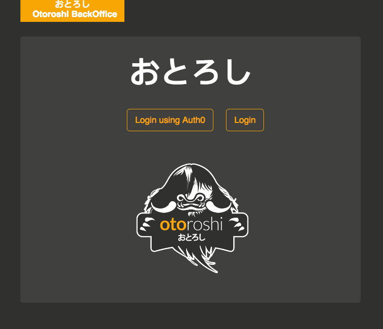

Auth0
You can use Auth0 to log into Otoroshi’s backoffice and Otoroshi’s private apps.
Go to settings (cog icon) / Danger Zone and expand the Backoffice Auth0 settings and Private apps Auth0 settings sections.

Now, you can fill the following fields :
Client IdClient ServiceDomain
For the Callback URL fields, use something like
https://otoroshi.foo.bar/backoffice/auth0/callback
https://privateapps.foo.bar/privateapps/auth0/callback
Of course, you need to replace otoroshi.foo.bar and privateapps.foo.bar with your own domain and sub-domains. Don’t forget to customize the callback URLs in your Auth0 backoffice too.
Now if you logout, you will see the Auth0 option on the login screen
